Plotting
- How do I plot my data?
- How do I customise a plot’s appearance?
- How do I save a plot to a file?
- Create line plots, scatter plots, error bar plots, bar charts, and histograms with Matplotlib.
- Customise line styles, colours, and markers.
- Add axis labels, titles, and legends.
- Arrange multiple plots in a figure with subplots.
- Save figures to PDF and PNG files.
Matplotlib is Python’s standard scientific plotting library
The most widely used scientific plotting library in Python is matplotlib. In practice you almost always work with the pyplot sub-module, imported with the alias plt. In a Jupyter Notebook, the %matplotlib inline magic ensures figures appear directly in the notebook output:
%matplotlib inline
import matplotlib.pyplot as pltBasic line plots
plt.plot(x, y) draws a line connecting the data points. Always label your axes:
import numpy
time = numpy.array([0, 1, 2, 3])
position = numpy.array([0, 100, 200, 300])
plt.plot(time, position)
plt.xlabel("Time (hr)")
plt.ylabel("Position (km)")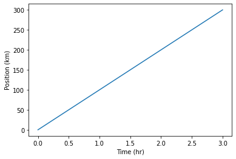
Controlling line and marker style
A compact format string as the third argument to plt.plot sets the colour and style together: 'b-' means a blue line, 'ro' means red circles, 'g+-' means green plus-markers connected by a line:
time = numpy.arange(10)
p1 = time
p2 = time * 2
p3 = time * 4
plt.plot(time, p1, 'b-')
plt.plot(time, p2, 'ro')
plt.plot(time, p3, 'g+-')
plt.xlabel("Time (hr)")
plt.ylabel("Position (km)")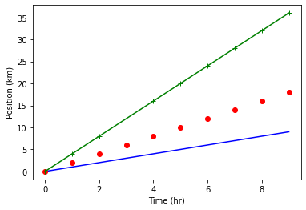
For finer control, use keyword arguments instead. The label keyword feeds into plt.legend():
plt.plot(time, p1, color='blue', linestyle='-', linewidth=5, label="blue line")
plt.plot(time, p2, 'ro', markersize=10, label="red dots")
plt.plot(time, p3, 'g-', marker='+')
plt.xlabel("Time (hr)")
plt.ylabel("Position (km)")
plt.legend()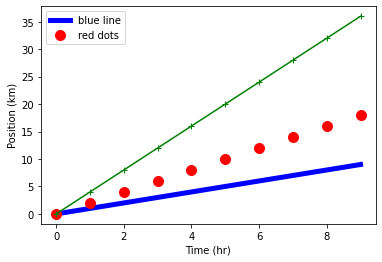
Built-in styles
Matplotlib ships with a set of named styles that control colours, fonts, and backgrounds consistently. List available styles with plt.style.available and apply one with plt.style.use:
print("available style names: ", plt.style.available)available style names: ['Solarize_Light2', '_classic_test_patch', 'bmh', 'classic', 'dark_background', 'fast', 'fivethirtyeight', 'ggplot', 'grayscale', 'seaborn-v0_8', ...]plt.style.use("seaborn-v0_8-whitegrid")
plt.plot(time, p1, linestyle='-', linewidth=5, label="blue line")
plt.plot(time, p2, 'o', markersize=10, label="dots")
plt.xlabel("Time (hr)")
plt.ylabel("Position (km)")
plt.legend()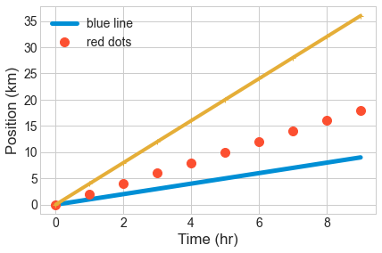
Scatter plots
When your data points should not be connected by a line, use plt.scatter. It accepts the same colour and marker keywords as plt.plot:
numpy.random.seed(20)
x = numpy.cumsum(numpy.random.randint(0, 100, 100))
y = numpy.cumsum(numpy.random.randn(100))
plt.scatter(x, y)
plt.scatter(x, 10 - y**2, color='green', marker='<')
plt.xlabel("x")
plt.title("Scatter plot example")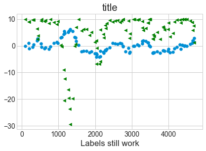
Error bars
In experimental physics you should always show measurement uncertainties. Use plt.errorbar with the yerr (and/or xerr) keyword. Set ls='' to suppress the connecting line and choose a marker explicitly:
numpy.random.seed(42)
x = numpy.cumsum(numpy.random.rand(10) * 10)
error = numpy.random.randn(10) * 4
y = x + numpy.random.randn(10) * 0.5
plt.errorbar(x, y, yerr=error, color='green', marker='o', ls='', lw=1, label="data")
plt.xlabel("x")
plt.title("Error bar example")
plt.legend()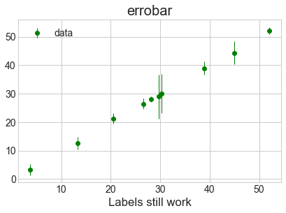
Bar charts and histograms
plt.bar draws a bar chart from pre-counted data. plt.hist bins raw data and draws the resulting histogram in one step — it also returns the counts and bin edges if you need them:
x = [0, 1, 2, 3, 4, 5]
y = [0, 4, 2, 6, 8, 2]
plt.bar(x, y)
plt.title("Bar chart")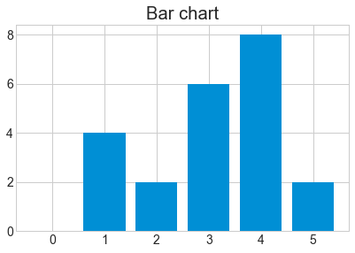
x = numpy.random.randint(0, 100, 50)
bin_count, bin_edges, boxes = plt.hist(x, bins=10, rwidth=0.9)
plt.title("Histogram")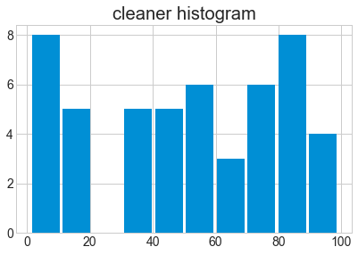
Controlling figure size
Call plt.figure(figsize=(width, height)) before plotting to set the output size in inches:
plt.figure(figsize=(8, 2))
plt.bar(x, y)
plt.title("Narrow bar chart")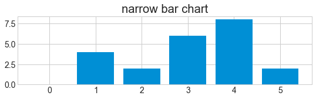
Multiple panels with subplot
plt.subplot(rows, cols, index) selects one panel in a grid of panels. Subsequent plt.plot calls draw into the currently active panel:
plt.figure(figsize=(8, 3))
x = [0, 1, 2, 3, 4, 5]
y = [0, 4, 2, 6, 8, 2]
plt.subplot(1, 3, 1)
plt.bar(x, y)
plt.title("left")
plt.subplot(1, 3, 2)
plt.bar(y, x)
plt.title("centre")
plt.subplot(1, 3, 3)
plt.bar(x, y)
plt.title("right")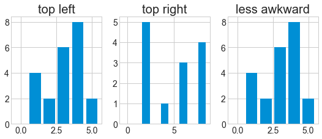
Saving figures
Call plt.savefig before the figure is displayed — once Matplotlib shows a figure it moves on to a new empty figure, and saving afterwards captures only a blank canvas. Supported formats include PDF, PNG, and SVG. For raster formats lke PNG use the dpi keyword to control resolution:
plt.figure(figsize=(8, 3))
plt.plot(x, y)
plt.savefig("data/fig1.pdf")
plt.savefig("data/fig1.png", dpi=150, transparent=True)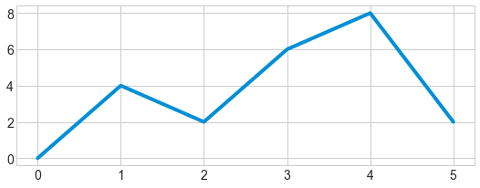
If you need to save after displaying, first capture a reference to the figure with plt.gcf() (get current figure), then call savefig on it:
fig = plt.gcf()
plt.plot(x, y)
fig.savefig('my_figure.png')- Import
matplotlib.pyplot as plt; use%matplotlib inlinein Jupyter. plt.plotdraws lines;plt.scatterdraws unconnected points;plt.errorbaradds uncertainty bars.- Format strings (
'b-','ro') or keyword arguments control colour, linestyle, and markers. - Add
plt.xlabel,plt.ylabel,plt.title, andplt.legendfor readable figures. plt.style.useapplies a consistent visual style.plt.figure(figsize=...)sets figure dimensions;plt.subplotcreates multi-panel layouts.- Call
plt.savefigbefore the figure is displayed to avoid saving a blank canvas.